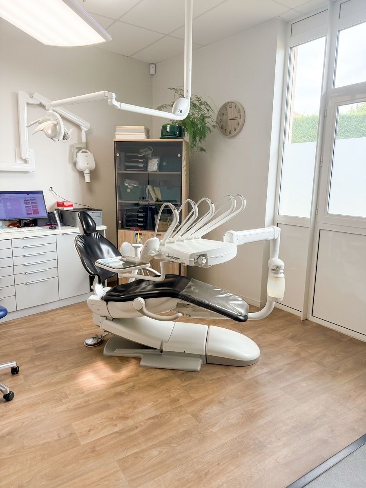
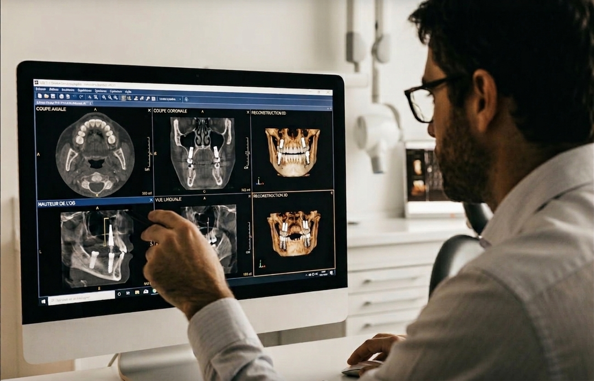
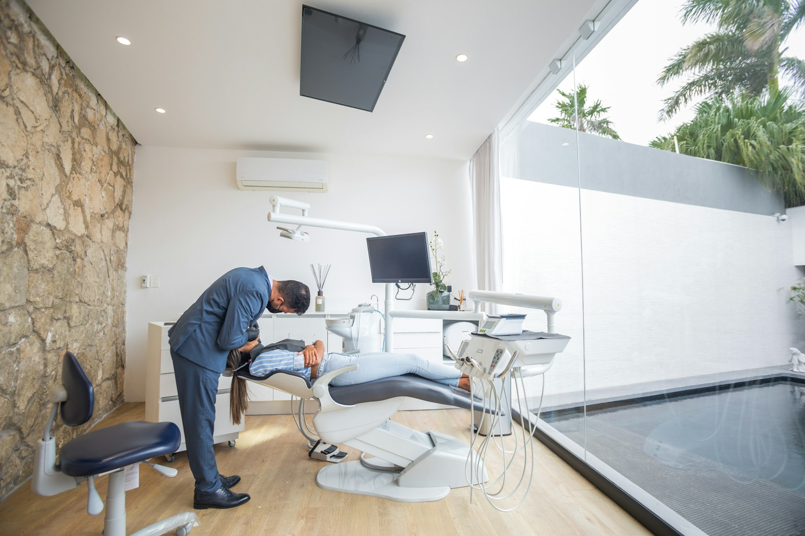

Une dentisterie moderne,
précise et personnalisée à Artix
Trois praticiens réunis pour vous accompagner dans vos soins dentaires, votre sourire et vos projets implantaires, avec une approche fondée sur la technologie, la précision et l'écoute.
La technologie au service de votre santé dentaire
Le cabinet associe expertise clinique, technologies numériques, diagnostic précis, planification personnalisée et accompagnement humain, à chaque étape de votre parcours de soins.
Précision
Des outils numériques permettant une analyse et une planification plus précises de chaque traitement.
Confort
Un parcours de soins pensé pour réduire les contraintes et améliorer l'expérience du patient.
Personnalisation
Chaque traitement est adapté à la situation, aux attentes et aux besoins propres à chaque patient.
Suivi
Un accompagnement attentif avant, pendant et après le traitement, pour préserver vos résultats.
Les technologies de la dentisterie moderne
Ces outils ne sont pas de simples équipements : ils permettent d'améliorer le diagnostic, la précision des gestes, la planification des traitements et le confort de votre suivi.
Imagerie numérique
Des clichés plus rapides et moins irradiants, pour un diagnostic détaillé partagé et expliqué avec vous avant toute décision de traitement.
Scanner & empreinte optique
Une empreinte numérique sans pâte, plus confortable pour le patient.
Planification numérique
Une simulation du traitement avant sa réalisation, notamment en implantologie.
Conception & fabrication numérique
Des prothèses conçues et ajustées avec une grande finesse de détail.

Retrouver confort, fonction et confiance grâce aux implants dentaires
Un implant dentaire remplace la racine d'une dent manquante et permet de retrouver une fonction masticatoire stable et un sourire naturel. Sa réussite repose sur un diagnostic rigoureux, une planification précise et un suivi attentif, du premier échange à long terme après la pose.
« Une prise en charge pensée de la première consultation au suivi à long terme. »Prendre rendez-vous pour un bilan implantaire
Trois praticiens, une même exigence
Une équipe de chirurgiens-dentistes réunie autour d'une même approche : précision, écoute et accompagnement personnalisé.

Dr Rouleau Benjamin
Présentation à compléter par le cabinet.
Découvrir son parcours
Dr Candela Caroline
Présentation à compléter par le cabinet.
Découvrir son parcours
Dr Grandati Camille
Présentation à compléter par le cabinet.
Découvrir son parcours
Un accompagnement en 5 étapes claires
Premier échange
Par téléphone ou en ligne, pour comprendre votre demande et planifier un premier rendez-vous.
Bilan & diagnostic
Examen clinique et, si nécessaire, imagerie numérique pour établir un diagnostic précis.
Plan de traitement
Une proposition claire et détaillée, expliquée avant toute décision commune.
Réalisation des soins
Des traitements réalisés avec précision, dans un cadre pensé pour votre confort.
Suivi personnalisé
Des contrôles réguliers pour préserver durablement les résultats obtenus.
Une communication honnête, à chaque étape
Conformément aux règles de communication des professionnels de santé, nous ne publions aucun contenu qui ne serait pas vérifié, autorisé ou authentique.
Galerie de résultats à venir
Une sélection de cas avant/après sera publiée dès que les photographies et les autorisations écrites des patients concernés seront réunies.
Avis Google à connecter
Cet espace affichera automatiquement les avis vérifiés du cabinet dès la connexion du widget Google. Aucun témoignage n'est inventé ni affiché sans provenir d'une source réelle.
Conformément aux règles de communication applicables aux professionnels de santé, aucune photographie n'est publiée sans l'accord écrit du patient et sans respect de sa confidentialité.

Un cabinet moderne, au cœur d'Artix
Le cabinet accueille ses patients dans un cadre lumineux et apaisant, pensé pour allier exigence médicale et confort. Trois chirurgiens-dentistes y exercent en complémentarité, autour d'un plateau technique numérique et de protocoles d'hygiène rigoureux.
Accessibilité
Un cabinet facile d'accès, pensé pour l'ensemble des patients.
Stérilisation & hygiène
Des protocoles stricts, conformes aux normes en vigueur.
Confort du patient
Un environnement chaleureux, pensé pour réduire l'appréhension.
Votre cabinet dentaire à Artix
731 avenue de la République — 64170 Artix, Pyrénées-Atlantiques
Cabinet dentaire à Artix et dans les Pyrénées-Atlantiques
Situé à Artix, dans les Pyrénées-Atlantiques, le cabinet accueille des patients d'Artix ainsi que des communes voisines. Notre équipe de trois chirurgiens-dentistes propose une prise en charge complète, de la prévention à l'implantologie, avec une attention particulière portée à la précision du diagnostic et au confort de chaque patient.
Vous avez un projet de soins ou d'implantologie ?
Parlons-en ensemble lors d'une première consultation.